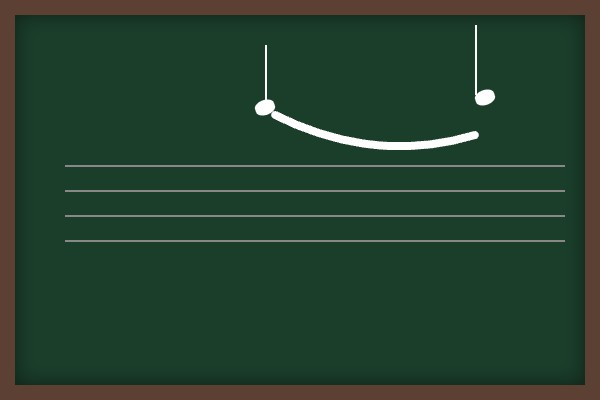
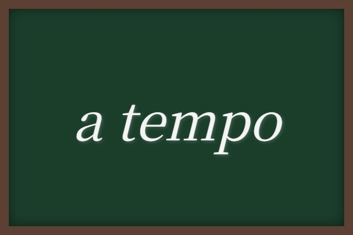

中学音楽（歌唱曲）
歌唱曲⑤ (荒城の月・サンタ ルチア・花)
滝廉太郎の金字塔である「荒城の月」「花」と、世界の民謡からイタリア・ナポリの名曲「サンタ ルチア」の3曲をマスターしましょう。歌詞の深い文学的意味や、それぞれの楽曲形式、音楽記号など、定期テストで配点の高い記述問題をカバーします！
1. 「荒城の月」の要点整理
日本の伝統的な旋律と西洋音楽を融合させた、滝廉太郎不朽の名作。
① 基本データ
- 作詞：土井晩翠（どいばんすい）
- 作曲：滝廉太郎（たきれんたろう）（若くして亡くなった天才作曲家）
- 速度記号：Andante（アンダンテ）

意味は「ゆっくり歩くような速さで」
- 拍子：4分の4拍子
- 調：ロ短調（ろたんちょう）（シャープ「♯」がファとドに2つつく短調）
- 形式：二部形式（A-A'-B-A'の構造を持つ二部形式）
- 詩の形式：七五調（しちごちょう）（「春高楼の（はるこうろうの＝7）花の宴（はなのえん＝5）」のように、七音と五音を基準とする詩の形式）
② 歌詞の意味（古典記述対策・最重要！）
- 花の宴（えん） ➔ 花見の宴（桜を愛でる華やかな宴会のこと）
- 千代（ちよ）の松が枝（え） ➔ 古い松の枝（長い年月を経た松の枝のこと）
- 照りそいし ➔ 照り映えた（月の光が明るく照らし合わさっていた様子）
- たがためぞ ➔ 誰のためなのか（「今宵の月は誰のために照っているのだろうか、いや、今は誰もいない城をただ照らすだけだ」という栄枯盛衰を表す表現です）
2. 「サンタ ルチア」の要点整理
美しいナポリの港と、海の情景を歌い上げるイタリアの舟歌。
① 基本データ
- 曲の分類：イタリア・ナポリ民謡（ナポリの音楽祭で発表されました）
- 拍子：8分の3拍子（8分音符を1拍とし、1小節に3拍入る拍子）
- 調：ハ長調（はちょうじょう）
- 音楽のジャンル名：カンツォーネ（「サンタ ルチア」や「オ ソーレ ミオ」など、イタリア語で「歌」を意味するポピュラーな歌曲）
② 楽典記号
- 付点8分音符 ➔ 8分音符の1.5倍の長さ（16分音符3つ分）。付点8分音符と16分音符の組み合わせ（タッカタッカというリズム）はこの曲の特徴です。
- メッゾ ピアノ (mp) ➔ 少し弱く

- アクセント（＞） ➔ その音を目立たせて、強調して演奏する。
- スラー ➔ 高さの違う2つ以上の音符を滑らかに演奏する。

3. 「花」の要点整理
日本の春を象徴する、華やかで弾むような滝廉太郎の名曲。
① 基本データ
- 作詞：武島羽衣（たけしまはごろも）
- 作曲：滝廉太郎（たきれんたろう）
- 形式：二部形式
- 曲の位置付け：組歌「四季」の第1曲（春を歌っています）
- 歌われている季節と花：春・桜
- 歌われている川の名前：隅田川（すみだがわ）（東京の下町を流れる川）
- 速度記号・用語：a tempo（ア・テンポ）

意味は「もとの速さで」
② 歌詞の意味（古典記述対策・超高配点！）
- 見ずや ➔ 見てごらん
- あけぼの ➔ 夜明け（「見ずやあけぼののつゆ浴びて」＝夜明けの露を浴びている様子を見てごらん）
- のべて ➔ 伸ばして（「手をのべて」＝手を伸ばして）
- くるれば ➔ 日が暮れると（「日暮れれば」の意味）
- 千金（せんきん）の ➔ とても価値のある（「一刻千金」に由来し、極めて貴重な時間のことを指します）
🔥 定期テスト対策・暗記のコツ
① 滝廉太郎の2大名曲の対比
・「荒城の月」 ➔ 作詞：土井晩翠、調：ロ短調、詩形：七五調
・「花」 ➔ 作詞：武島羽衣、川：隅田川、位置：組歌「四季」の第1曲
作詞者がごちゃ混ぜになりやすいため、「晩翠の月、羽衣の花」のように唱えて覚えましょう！
② ナポリ民謡「サンタ ルチア」の拍子
本曲は「8分の3拍子」です。「8分の6拍子」と間違いやすいため、1小節に入る拍の数と基準となる音符（8分音符が3つ）を正しく区別して記憶しましょう！
③ 歌詞表現の現代語訳（一字一句正しく！）
「あけぼの ＝ 夜明け」「見ずや ＝ 見てごらん」「千金の ＝ とても価値のある」は減点されやすい記述ポイントです。国語のテストの感覚で、言葉の意味をそのまま正確に書き出せるようにしておきましょう！